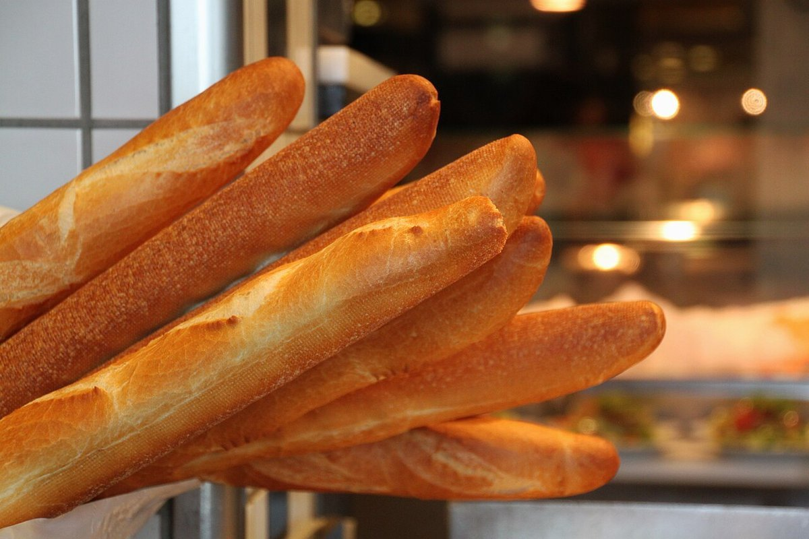
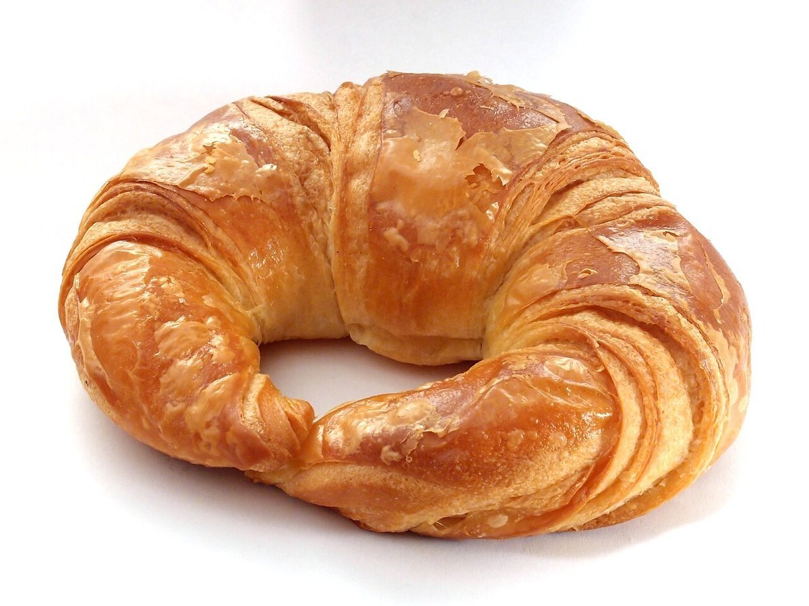
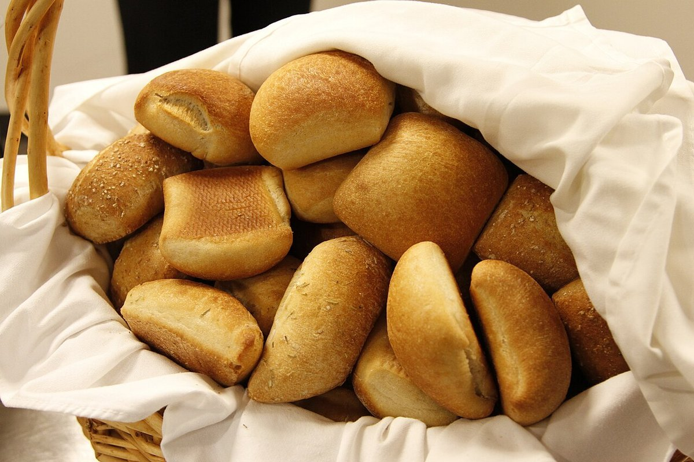
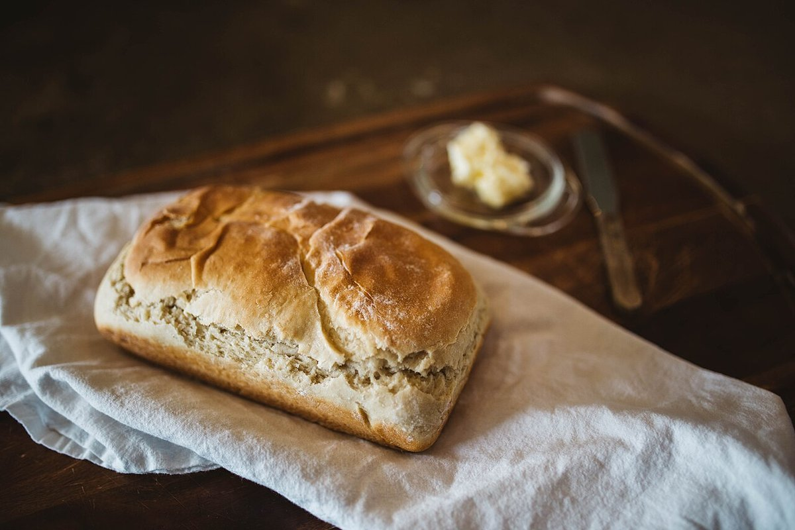
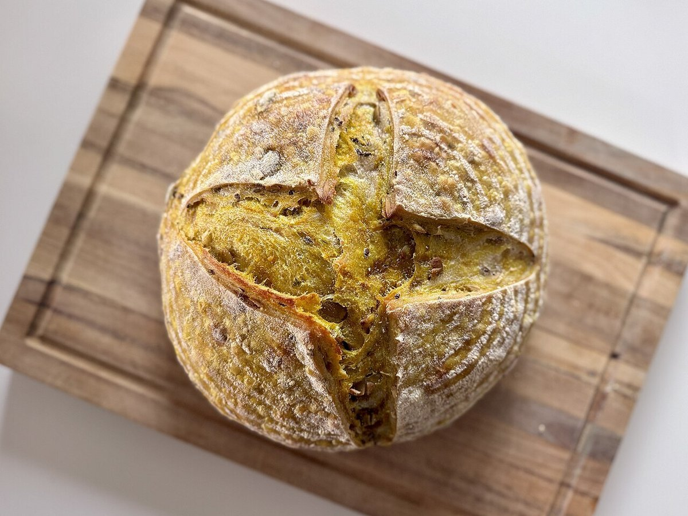
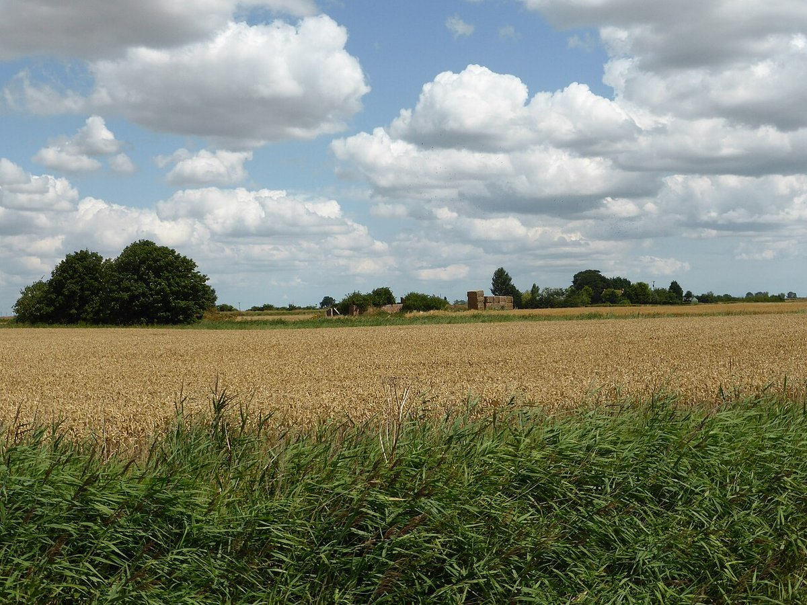

ベーカリー / 福島県西白河郡矢吹町
町のパン屋さんに、
ふらりと寄る
日常使いのベーカリーとして、気軽に立ち寄ってもらえるお店に。このページのコンセプトは制作側の案です。




ふらりと寄る時間帯
朝・昼・夕の使い方は「こんな風に使ってもらえたら」という制作側の案で、お店の事実ではありません。

朝
出かける前に、ふらりと
一日のはじまりに、ちょっと立ち寄る。そんな使い方を思い描いています。

昼
ひと息つくお昼に
お昼どきに、食べたいものを選びに寄る。そんな時間もいいなと考えています。

夕
帰り道に、ふらりと
仕事や用事の帰りに、明日のぶんを持ち帰る。そんな寄り道を想像しています。